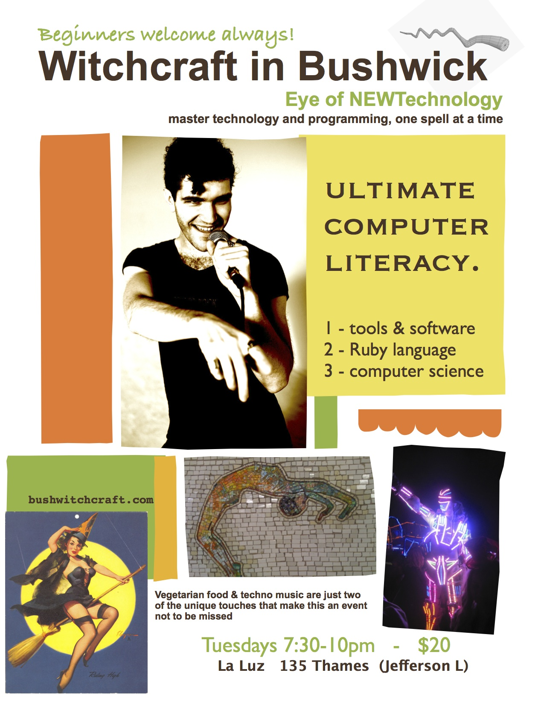

I created Witchcraft because the skills I taught myself have resulted in the freedom to make a very good living doing something that is very fun. I get job offers every day and I want to share that opportunity with good people while sharing those good people with good companies.
This is not just a course on Ruby and Rails - it takes a three-pronged approach (like Satan's fork) - tools, languages, and science. I show you all the shortcuts that speed up your work, and I teach you all the concepts and cultures that help you feel comfortable by knowing what's going on under some of the covers and why things must be done that way.
No matter how much you learn, a major part of every programming task is going to be looking new things up. This situation is even more true with an ultra-high-productivity environment like Ruby, because once you learn how to do what you're doing, it usually only takes one line of code to do it, and then you're back to the research stage, figuring out how to make your next dream come true. This is why I also teach the best research methods, debugging techniques, and helpful communities (as well as the manners that they expect from you as a newbie).
Click the poster below to go to Facebook.
